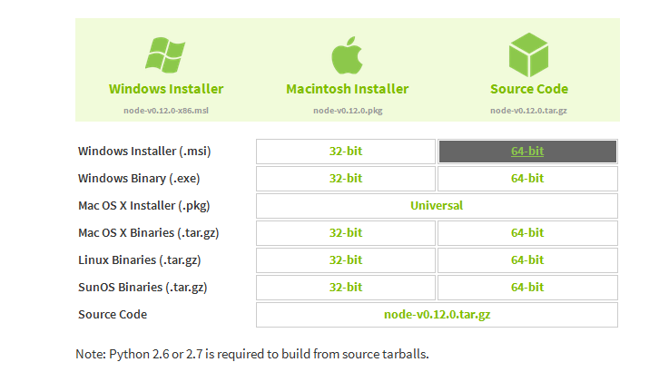
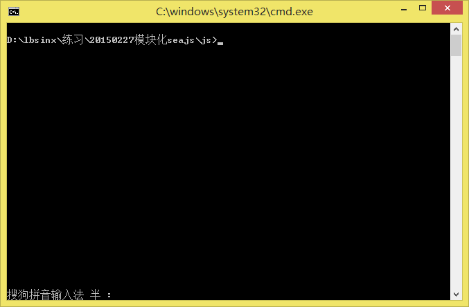
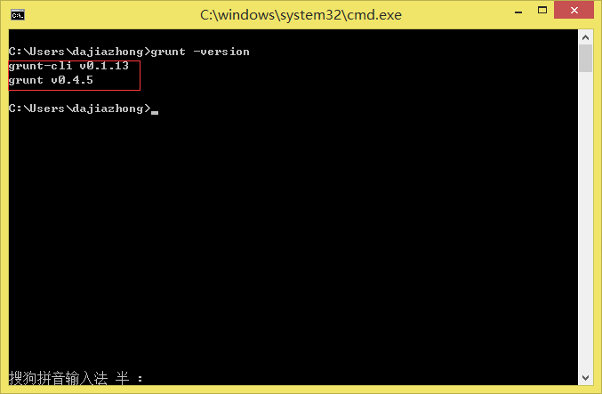
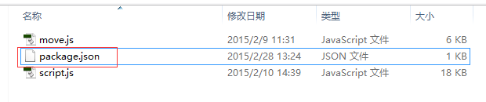
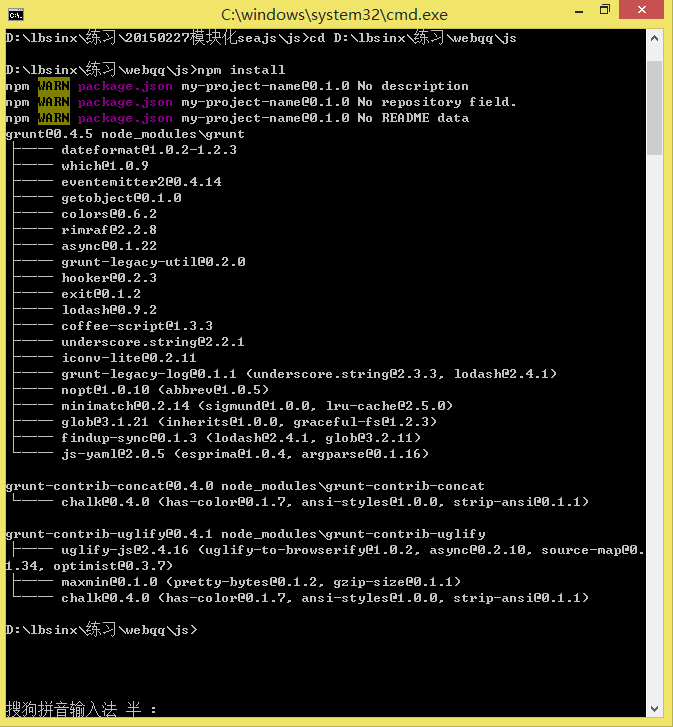
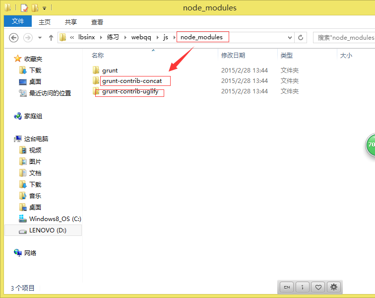
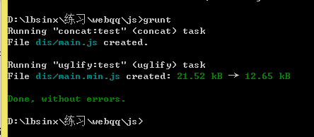
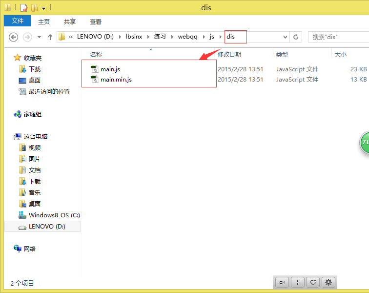
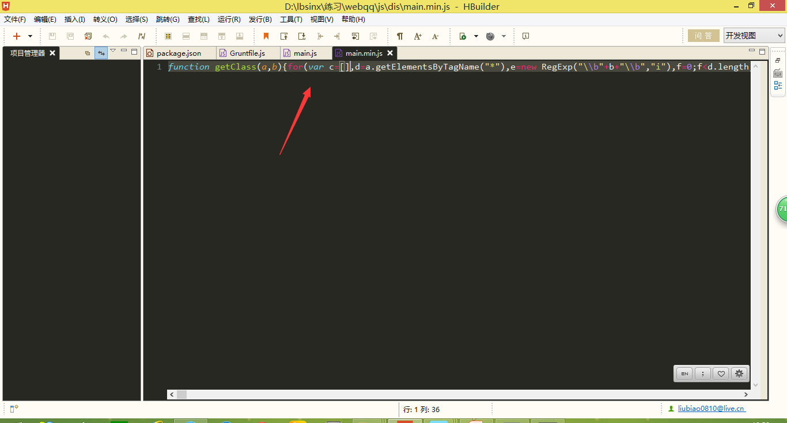

Grunt初探
今天学习构建工具Grunt :www.gruntjs.org 构建工具拿来干嘛呢？常见可以这样的：
比如一个大的项目有许多开发者，最后要发布到线上了，相关的JS最好合并为一个JS文件，并且压缩最好了
呐！！，现在就可以用到grunt了，然而grunt是基于nodejs的，那么到底呀怎么安装使用呢？
首先我们去node官网 www.nodejs.org 下载支持自己电脑的版本
安装流程 ：
先安装nodejs和npm(包管理工具)
npm install -g grunt-cli
npm install grunt –save-dev
grunt –version

然后下一步下一步安装即可
然后打开命令行
cmd

一次输入下面命令，你可以选择复制进去即可
npm install -g grunt-cli
npm install grunt –save-dev
grunt -version
最后输入grunt -version这个时候显示  即证明安装成功
接下来我们来用这个试试，
在要处理的文件的根目录下创建一个package.json文件 
这个文件里面是
{
"name": "my-project-name",
"version": "0.1.0",
"devDependencies": {
"grunt": "~0.4.5",
"grunt-contrib-concat":"~0.4.0",//grunt官网找到的合并文件插件
"grunt-contrib-uglify":"~0.4.0"//grunt官网找到的压缩文件插件
}
}
然后在命令行中进入该项目合并文件的根目录（命令自己百度即可）
接下来就是下载插件到本地，在命令行中输入 npm install 等待下载
当出现这个  并且本地目录下存在这些  说明下载成功
那么现在我们可以开始合并压缩了
在合并文件的更目录创建Gruntfile.js
里面编写需要执行的命令，具体可以去官网相应插件查找文档
module.exports = function(grunt){
grunt.initConfig({
pkg: grunt.file.readJSON('package.json'),
concat: {
test:{
files:{
"dis/main.js":["move.js","script.js"]//表示将"move.js","script.js"合并为main.js创建dis文件夹放置
}
}
},
uglify: {
test:{
files:{
"dis/main.min.js":["dis/main.js"]//表示将dis/main.js压缩为main.min.js放置在dis文件夹中
}
}
}
});
//下面的事官网的示例代码拿出来的，相当于执行上面的配置
grunt.loadNpmTasks('grunt-contrib-concat');
grunt.loadNpmTasks('grunt-contrib-uglify');
grunt.registerTask('default', ['concat',"uglify"]);
}
一切准备继续在命令行中输入grunt执行最后出现这个  即成功了，
我们看看本地文件  再看看代码：  是一行吧，说明操作成功
但有人问了，就这个啊，合并压缩，网上工具多的是，何必还命令行什么的多麻烦，
此言差矣我只是用这简单的例子说明grunt的强大而已

微信打賞

支付寶打賞